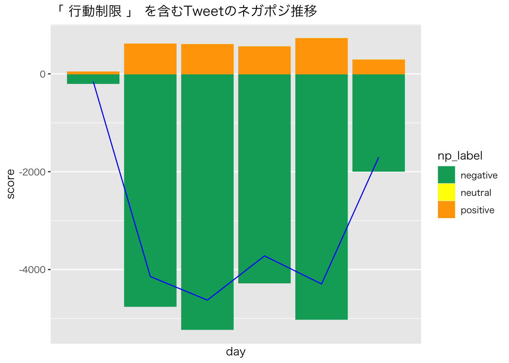
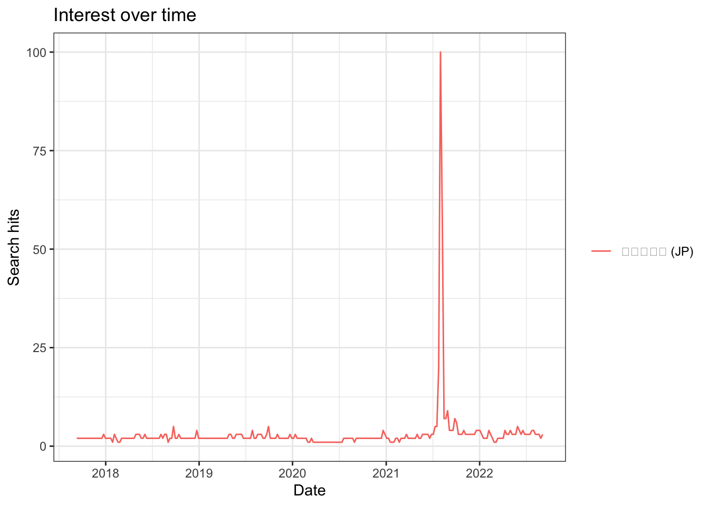
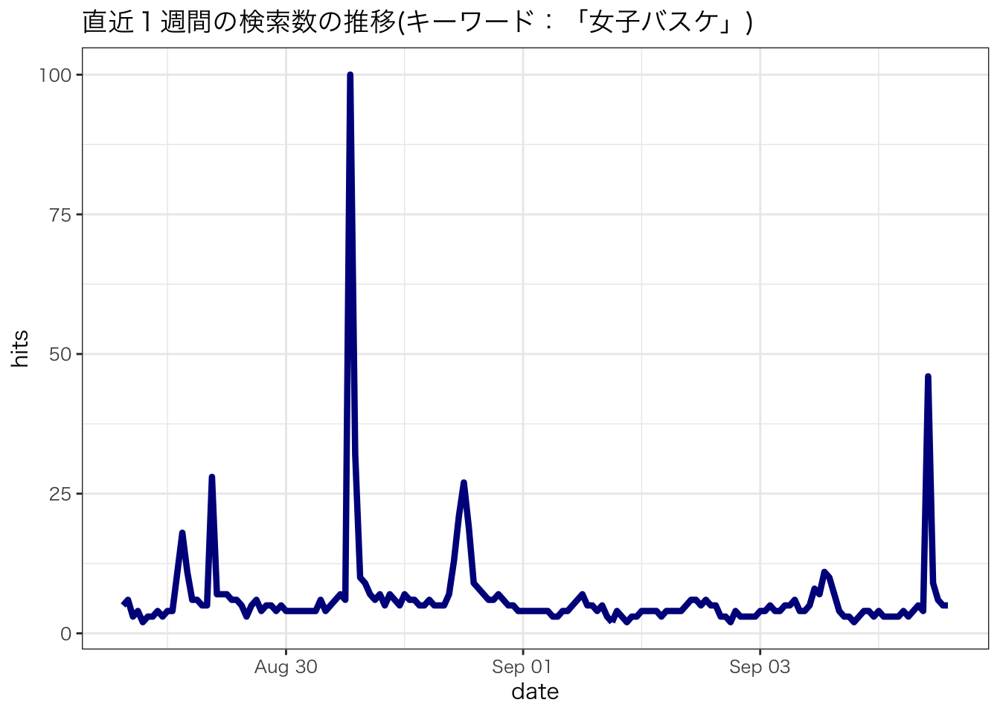
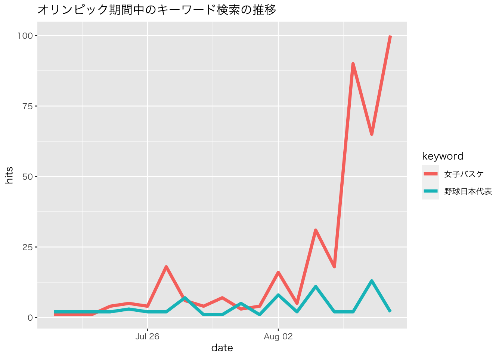

chapter: 8 RによるSNSデータの分析
以下では、Twitterデータを使ったワードクラウドの作成と、GoogleトレンドのRを使った操作を解説します。
8.1 Twitterデータの活用
Twitterデータの取得・分析をおこないます。分析には、rtweetというpackageを使用します。ワードクラウドを作るための準備として、最初に形態素解析のためのソフトウェアを下記の手順でインストールします（ここは大きな山場です）。
# install.packages("wordcloud2")
library(ggplot2)
library(rtweet)##
## Attaching package: 'rtweet'## The following object is masked from 'package:purrr':
##
## flattenlibrary(tidytext)
library(dplyr)
library(RMeCab)
library(wordcloud2)
library(lubridate)##
## Attaching package: 'lubridate'## The following object is masked from 'package:cowplot':
##
## stamp## The following objects are masked from 'package:base':
##
## date, intersect, setdiff, unionlibrary(tidyr)
library(stringr)
# ディレクトリの設定
# ここで指定したディレクトリにtmp_dataというフォルダを事前に作成する。
#setwd("/Users/yamamoto/R/forTeaching/")8.1.2 1. Windowsの場合
Mecabのインストール 最初に MeCabをインストールします。ただし、R-4.2.0 以降、オリジナルのMeCabでは動作しません。ここ https://github.com/ikegami-yukino/mecab/releases から 64bit版MeCabをダウンロードし、辞書として必ずUTF-8を指定してください。また、RMeCabで解析するファイルは UTF-8 で保存してください（WindowsのデフォルトはShift-JISであり、全角文字が含まれるCSVファイルなどもRMeCabに読ませる場合はUTF-8に変更してください）。
RMeCabのインストール MeCab本体がデフォルトとは違うフォルダにインストールされている場合、インストール先（デフォルトだとC:Files）にあるmecabrcをコピーし、自分のホームフォルダ(C::）に、頭にドットを付けた .mecabrc ファイルとして用意する必要があります。その際、dicdir = を編集します。ちなみにデフォルトだとdicdir = C:Files 。
8.1.3 2. Macの場合
MacがIntelかM1チップかを確認する。M1チップのMacに誤ってIntel版のRがインストールされていないかも確認する。
Mecabの本家はここですが、今回はターミナルを立ち上げて以下を実行することで、 Mecab本体および使用する辞書のダウンロードからインストールまでを行います。この方法は、こちらを参考にさせていただきました。
cd ~/Downloads
curl -fsSL ‘https://drive.google.com/uc?export=download&id=0B4y35FiV1wh7cENtOXlicTFaRUE’ -o mecab-0.996.tar.gz
tar xf mecab-0.996.tar.gz
cd mecab-0.996
./configure –with-charset=utf8
make
sudo make install
以上でMeCabのインストールが終了する。
- ターミナルから以下を実行する（辞書のインストール）
cd ~/Downloads
curl -fsSL ‘https://drive.google.com/uc?export=download&id=0B4y35FiV1wh7MWVlSDBCSXZMTXM’ -o mecab-ipadic-2.7.0-20070801.tar.gz
tar zvxf mecab-ipadic-2.7.0-20070801.tar.gz
tar xf mecab-ipadic-2.7.0-20070801.tar.gz
cd mecab-ipadic-2.7.0-20070801
./configure –with-charset=utf8
make
sudo make install
以上でMeCabが使う辞書のインストールが終了する。
以下をターミナルで確認する。
$ mecab
すもももももももものうち
すもも 名詞,一般,,,,,すもも,スモモ,スモモ
も 助詞,係助詞,,,,,も,モ,モ
もも 名詞,一般,,,,,もも,モモ,モモ
も 助詞,係助詞,,,,,も,モ,モ
もも 名詞,一般,,,,,もも,モモ,モモ
の 助詞,連体化,,,,,の,ノ,ノ
8.2 ワードクラウド
ワードクラウドでカウントしたくない記号などを排除する。
# 分析に加えたくない記号などを削除する
rt$text <- gsub("https://.*", "", rt$text)
rt$text <- gsub("@", "", rt$text)
rt$text <- gsub("RT", "", rt$text)
rt$text <- gsub("#", "", rt$text)
rt$text <- gsub("\\(", "", rt$text)
rt$text <- gsub("\\)", "", rt$text)
rt$text <- gsub("/", "", rt$text)
rt$text <- gsub(":", "", rt$text)
# こちらにお世話になりました
# https://note.com/text_tier2718/n/n6b20ccd3cb49
rt$text <- rt$text %>%
str_replace_all(pattern = '\\p{ASCII}',replacement = "") # 記号を消します。形態素解析を実施
rt_text <- rt$text %>%
na.omit() %>%
#iconv(from = "UTF-8", to = "CP932") %>% # windowsのみEncodeの変更が必要です。
paste(collapse = "") # テキストを結合
textfile <- tempfile() # 一時ファイルの入れ物を作成
write(rt_text, textfile) # docDFで読むために一時ファイルを作成
cloud <- docDF(textfile, type = 1) #形態素解析を行う際に特定の品詞に絞って抽出## file_name = /var/folders/13/9dn0stxj0ms73960hn9c5b9r0000gn/T//RtmpaT42bu/file8ed9187db1e1 opened
## number of extracted terms = 18709
## now making a data frame. wait a while!#cloud <- docDF(textfile, type = 1, pos = "名詞")
unlink(textfile) # 一時ファイル消去
cloud <- cloud %>%
select(everything(), FREQ = starts_with("file")) %>% # 4列目のfile****....という名前が長いためFREQへ変更
arrange(desc(FREQ))
# 消したい不要なワードを設定
exclude_word = c("する","なる","やる","ある","いる","-","♪","制限","行動",x)
# 動詞と名詞で良い感じのやつを残す
cloud2 <- cloud %>%
filter(grepl(pattern = "動詞|名詞", x = POS1) &
!grepl(pattern = "助動詞|代名詞", x = POS1) &
!grepl(pattern = "非自立|接尾|数|代名詞", x = POS2)
) %>%
filter(!TERM %in% exclude_word)可視化をする。
# Takaoフォント様 https://launchpad.net/takao-fonts
cloud2 %>%
select(TERM,FREQ) %>%
slice(1:100) %>% # 描画する範囲を設定
wordcloud2(fontFamily = 'Takao Pゴシック', color = "random-light",
minRotation = 0, maxRotation = 0, size = 1.2)8.3 Tweetのネガポジ分析
Tweetテキストに対して感情分析を行います。
感情分析とは(ざっくり言うと)、テキストに含まれている単語がそれぞれネガティブな表現なのかポジティブな表現なのかを評価し、テキスト全体がネガ・ポジどちらなのかを判定するものです。その判定にはこちらの辞書を利用させていただきました。
取得したツイート日時はPOSIXct型の世界共通時(UTC)なので、これをas.POSIXlt()でPOSIXlt型の日本標準時(JST)に変換します。
# ツイート日時の抽出とPOSIXlt型・タイムゾーンの変換
tw_time <- rt[["created_at"]] %>%
as.POSIXct(tz = "Etc/GMT") %>%
as.POSIXlt(tz = "Japan")
# ツイートテキストの抽出と文字列処理
tw_text <- rt[["text"]] %>%
str_remove_all("^@.*?\\s") %>% # リプライ先の除去
str_remove_all(("https?://[\\w/:%#\\$&\\?\\(\\)~\\.=\\+\\-]+")) %>% # urlの除去
str_remove_all("[\U0001F004-\U000207BF]") # 絵文字の除去ここの\(term\)というワードを変更することで集計する期間を変更できる。
# 単位(期間)を指定
term <- "mon"
term <- "day"
# 期間ごとにツイートテキストをまとめる
text_df <- data.frame(
terms = as.Date(floor_date(tw_time, term)), # 指定した期間で丸める
texts = tw_text) %>%
group_by(terms) %>% # 期間ごとにグループ化
summarise(texts = paste(texts, collapse = "\n")) # 同一期間のテキストを結合floor_date()'で指定した期間(単位)に丸めて、as_date()’にDate型の日付データに変換します(時刻データを落とします)。
また丸めて同一期間となったツイートテキストをまとめます。各ツイートの区切りは改行(`’)としておきます。
# 単語感情極性対応表の取得
np_dic_original <- read.csv(file('http://www.lr.pi.titech.ac.jp/~takamura/pubs/pn_ja.dic',
encoding='Shift_JIS'), header = F, sep = ":")
# ネガポジ辞書の作成
np_dic <- np_dic_original %>%
select(TERM = V1, POS1 = V3, allocation = V4) %>% # 列の選択
distinct(TERM, .keep_all = TRUE) # 重複の除去
head(np_dic)## TERM POS1 allocation
## 1 優れる 動詞 1
## 2 良い 形容詞 1
## 3 喜ぶ 動詞 1
## 4 褒める 動詞 1
## 5 めでたい 形容詞 1
## 6 賢い 形容詞 1形態素解析を実施し、各単語の配点と出現回数をかけてスコアを計算する。スコアがマイナスなら「ネガティブ」、プラスなら「ポジティブ」、0(またはNA)なら「ニュートラル」のラベルを付与します。
#以下のコードの出所
#https://www.anarchive-beta.com/entry/2019/04/01/213027
# 一時テキストファイルの保存先を指定
folder_name <- "tmp_data"
# 分析結果の受け皿を初期化
score_df <- data.frame()
for(i in 1:nrow(text_df)) {
# 一時ファイルパスを作成
tmp_file_name <- paste("screen_name", "_", text_df[["terms"]][i], ".txt", sep = "")
tmp_path <- paste(folder_name, tmp_file_name, sep = "/")
# テキストファイルを書き出し
write(text_df[["texts"]][i], tmp_path)
# MeCabによる形態素解析
mecab_df <- docDF(tmp_path, type = 1, pos = c("動詞", "形容詞", "副詞", "助動詞"))
if(!is.null(mecab_df)) { ## (NULLでないときのみ)
# ネガポジ配点を結合
tmp_score_df <- mecab_df %>%
left_join(np_dic, by = c("TERM", "POS1")) %>% # 各単語に配点を付与
mutate(allocation = replace_na(allocation, 0)) %>% # NAを0に置換
select(TERM, FREQ = tmp_file_name, allocation) # docDF仕様の列名に変更
# ネガポジスコアを計算
tmp_score_df <- tmp_score_df %>%
mutate(terms = text_df[["terms"]][i]) %>% # 日付情報列の追加
mutate(allocation = replace_na(allocation, 0)) %>% # 配点がNAの場合0に置換
mutate(score = allocation * FREQ) %>% # (スコア) = (配点) * (語数)
mutate(
np_label = case_when(
score < 0 ~ "negative", # (スコア) < 0ならネガ
score > 0 ~ "positive", # (スコア) > 0ならポジ
score == 0 ~ "neutral" # (スコア) = 0ならニュート
)
) # ネガポジラベルを付与
# 全期間の結果を結合
score_df <- rbind(score_df, tmp_score_df)
}
}## file_name = tmp_data/screen_name_2022-08-25.txt opened
## number of extracted terms = 745
## now making a data frame. wait a while!## Note: Using an external vector in selections is ambiguous.
## ℹ Use `all_of(tmp_file_name)` instead of `tmp_file_name` to silence this message.
## ℹ See <https://tidyselect.r-lib.org/reference/faq-external-vector.html>.
## This message is displayed once per session.## file_name = tmp_data/screen_name_2022-08-26.txt opened
## number of extracted terms = 1310
## now making a data frame. wait a while!
##
## file_name = tmp_data/screen_name_2022-08-27.txt opened
## number of extracted terms = 1311
## now making a data frame. wait a while!
##
## file_name = tmp_data/screen_name_2022-08-28.txt opened
## number of extracted terms = 1351
## now making a data frame. wait a while!
##
## file_name = tmp_data/screen_name_2022-08-29.txt opened
## number of extracted terms = 1292
## now making a data frame. wait a while!
##
## file_name = tmp_data/screen_name_2022-08-30.txt opened
## number of extracted terms = 1219
## now making a data frame. wait a while!
##
## file_name = tmp_data/screen_name_2022-08-31.txt opened
## number of extracted terms = 1222
## now making a data frame. wait a while!
##
## file_name = tmp_data/screen_name_2022-09-01.txt opened
## number of extracted terms = 1188
## now making a data frame. wait a while!
##
## file_name = tmp_data/screen_name_2022-09-02.txt opened
## number of extracted terms = 1141
## now making a data frame. wait a while!
##
## file_name = tmp_data/screen_name_2022-09-03.txt opened
## number of extracted terms = 1120
## now making a data frame. wait a while!tail(score_df)## TERM FREQ allocation terms score np_label
## 11894 驚く 1 0.00 2022-09-03 0.00 neutral
## 11895 高い 23 0.00 2022-09-03 0.00 neutral
## 11896 高まる 1 -0.20 2022-09-03 -0.20 negative
## 11897 鬱陶しい 1 -0.99 2022-09-03 -0.99 negative
## 11898 鳴る 1 0.00 2022-09-03 0.00 neutral
## 11899 黙る 6 -0.83 2022-09-03 -4.98 negative単語ごとに得点を与えられたので、次は期間ごとに合計します。
# 期間ごとにネガスコア・ポジスコアの合計
result_df <- score_df %>%
select(terms, np_label, score, FREQ) %>%
group_by(terms, np_label) %>%
summarise(score = sum(score), FREQ = sum(FREQ)) # スコアと頻度を合算## `summarise()` has grouped output by 'terms'. You can override using
## the `.groups` argument.可視化
# ggplotを使った可視化
ggplot(result_df, aes(x = terms, y = score)) +
geom_bar(mapping = aes(fill = np_label, color = np_label), stat = "identity") + # 棒グラフ
scale_fill_manual(values = c("#00A968", "yellow", "orange")) + # 塗りつぶしの色
scale_color_manual(values = c("#00A968", "yellow", "orange")) + # 枠の色
geom_line(stat = "summary", fun = "sum", color = "blue") + # 折れ線グラフ
scale_x_date(date_breaks = "2 weeks") + # x軸目盛(day)
#scale_x_date(date_breaks = "1 month", date_labels = "%Y-%m") + # x軸目盛(mon)
theme(axis.text.x = element_text(angle = 90)) + # x軸目盛の傾き
theme_gray(base_family = "HiraKakuPro-W3")+
labs(title = paste("「",x,"」", "を含むTweetのネガポジ推移",seq=""),
x = term) # ラベル
8.4 Googleトレンドの分析
社会トレンドを分析できる別の手段として、Googleトレンドがあります。検索数ではなく、相対的な変化を表すものですが、人々の関心の変化を時系列で見る上では非常に参考になります。Googleトレンドは、gtrendsRというpackageで分析することが可能です。
#install.packages("gtrendsR")
library(gtrendsR)
# 以下は、https://skume.net/entry/2021/03/28/023122より
#引数について
#keyword: Google Trends query キーワードである文字ベクトル。複数のキーワード入力も可。
#geo: queryの地理的な地域を示す文字ベクトル。世界中の場合には、"all"を指定する。
#また上記の国コードなどを使用することで、複数の国・地域を指定できる。
#time: queryの期間を指定する文字列。以下を参照のこと。
#"now 1-H" 最後の1時間
#"now 4-H" 最後の4時間
#"now 1-d" 最後の1日
#"now 7-d" 過去7日間
#"today 1-m" 過去30日間
#"today 3-m" 過去90日
#"today 12-m" 過去12ヶ月
#"today+5-y" 過去5年間(デフォルト)
#"all" Google Trends の開始時（2004 年）から
#"Y-m-d Y-m-d" 2つの日付の間で指定（例：「2010-01-01 2010-04-03」）
trendWB5yrs <- gtrends(keyword = "女子バスケ",
geo = "JP", #地域
time = "today+5-y") #期間(例：五年)
plot(trendWB5yrs)
デフォルトのplot関数では凡例が文字化けするようなので、ggplot2にて描画します。
trendWB7days <- gtrends(keyword = "女子バスケ",
geo = "JP", #地域
time="now 7-d")
trendWB7days %>%
.$interest_over_time %>%
ggplot(aes(x = date, y = hits)) +
geom_line(colour = "darkblue", size = 1.5) +
theme_bw(base_family = "HiraKakuPro-W3")+
ggtitle("直近１週間の検索数の推移(キーワード：「女子バスケ」)")
複数キーワードに挑戦してみよう。
search_words<-c("女子バスケ", "野球日本代表")
Olympics <- gtrends(keyword = search_words,
geo = "JP", #地域
time="2021-07-21 2021-08-08")
Olympics %>%
.$interest_over_time %>%
ggplot(aes(x = date, y = hits, color=keyword)) +
geom_line( size = 1.5) +
ggtitle("オリンピック期間中のキーワード検索の推移")
上記の例では、time="2021-07-21 2021-08-08"というフォーマットで期間を設定している点にも注意しよう。これをみると、日本女子バスケットボール代表の快進撃で検索数が大きく増加していることがわかる。